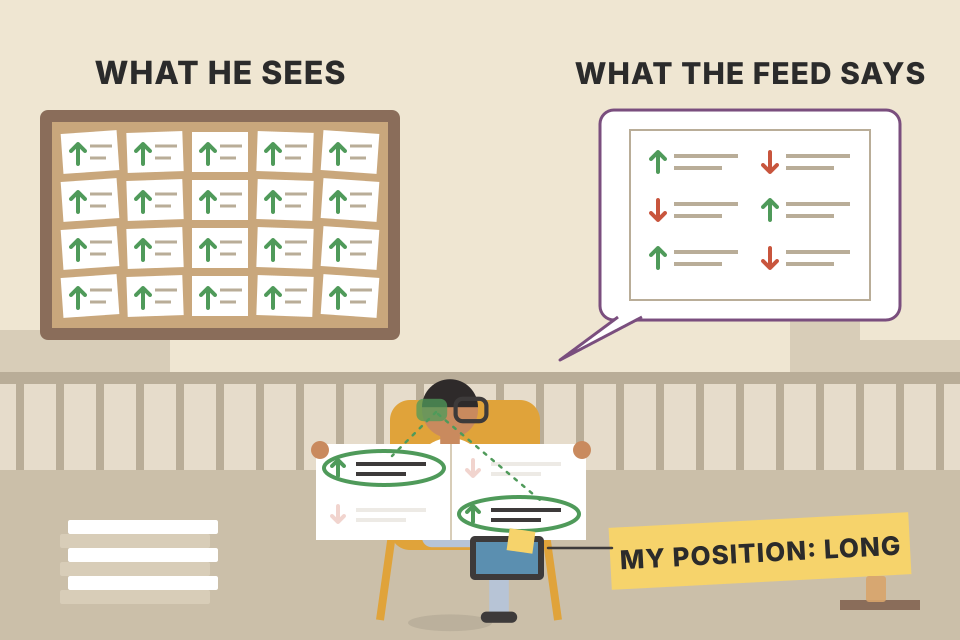
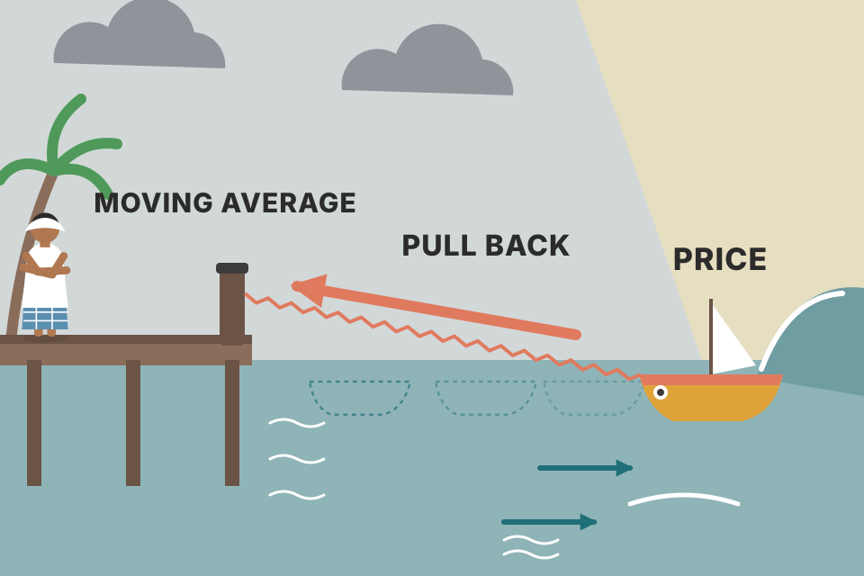
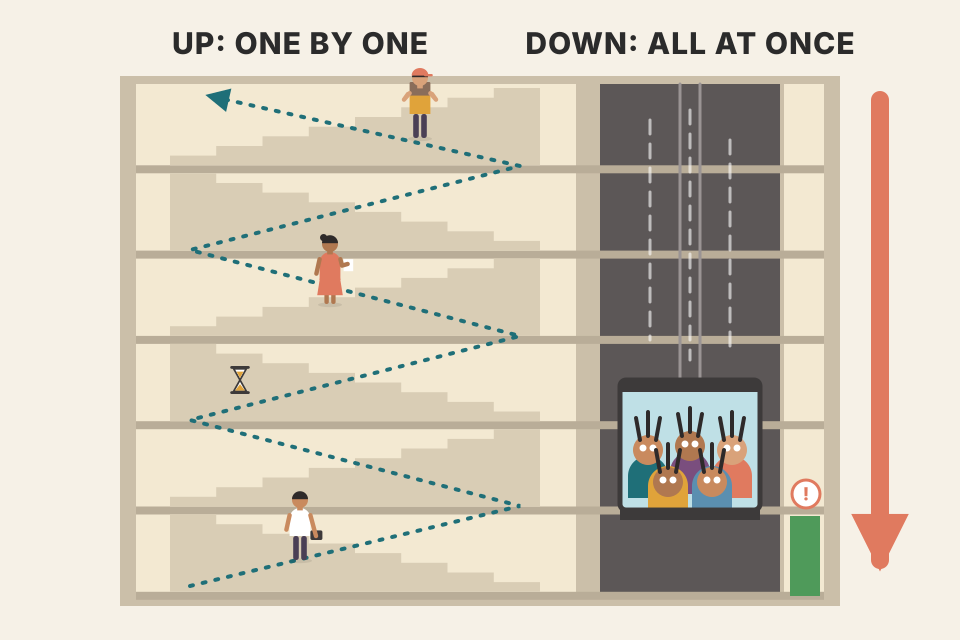
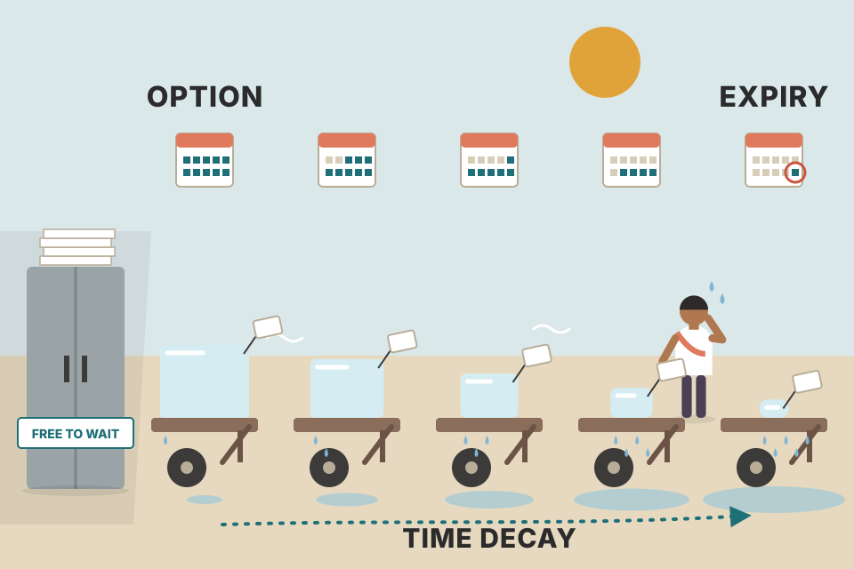

Carter's bridge from the trader's psychology (Chapters 1–2) to the market's psychology. His answer: markets aren't random noise and they aren't irrational. They ebb and flow in thrusts and reactions, in three moods (up, down, sideways), on every time frame, and the people who get stopped out at the extremes hand their positions to the people who were waiting. This page covers every idea in the chapter in the book's order, rebuilds the chapter's 12 figures as live charts, and adds tested option maths where Carter gives numbers. Every price chart uses a simulated market, not real data.
Note: in this PDF copy every figure slot (Figs 3.1–3.12, pdf p80–89) is blank. The charts here are rebuilt from Carter's descriptions of them, not copied.
The chapter has five headings. The second one, "How Do the Markets Naturally Move?", is ten pages long, so it's split into several plates below (plates 03–14 all sit under that heading).
The chapter opens with an epigraph from Criss Jami (Healology): with enough mental gymnastics, almost any fact can be bent to fit confirmation bias, which is the easiest way to keep living a lie. Carter then asks the chapter's question: after two chapters on the trader's mind, do the markets themselves have a rhythm, or is it all random?
He starts with the trader again. It's easy to be a pessimist (everyone loved The Big Short), but the end of the world isn't the only trade worth doing. He has known people who understand obscure corners of the market far better than he does and who still put a big part of their net worth, and their children's inheritance, into the doomsday kit: bunkers, bullets, gold coins and tinned Spam, sometimes literally. Fear eats mental capital and drowns out other views. Once fear of the future is the filter, fear-based decisions feed a fear-based outlook, and the loop can run a whole life.
Confirmation bias is our pull toward ideas that match our inner picture of the world. In trading it filters out every piece of information that contradicts our view and lets through only what agrees. That's dangerous in politics, advertising and shopping too; Carter quotes the saying that lies are only as strong as the people who believe them. In markets it makes us easy prey for the machines, which trade with no beliefs at all. And of the thousands of data points you could study, only a handful actually move results, while bias tilts which ones you notice toward your own inner world rather than reality.

A news feed where half the headlines are bullish and half bearish. A trader who is long reads every bullish one and skims past most bearish ones. After a month he "knows" the news is overwhelmingly bullish. Nothing in the feed changed; only his filter did.
Simulated: 120 headlines, each bullish or bearish with a 50/50 coin. The lines are the running share of bullish headlines, counted honestly (teal) and counted by a long trader who drops each bearish one with the chance on the slider (orange).
If a fraction b of bearish headlines is dropped, the remembered bullish share is ½ ÷ (½ + ½(1 − b)) = 1 ÷ (2 − b). At b = 60% that's 71% "bullish" from a 50/50 feed. The bias doesn't add new information; it deletes half of it and makes you more confident at the same time. That's Carter's "doubly useless" point in the next plate: most data is irrelevant, and the bit you keep is filtered.
John Maynard Keynes was at the top of economics and still lost large sums speculating in currencies, because he was right too early. That gave us his famous line: The market can stay irrational longer than you can stay solvent.
Your need to be right doesn't move the market.
Carter disagrees with the word "irrational". The market is thousands of confirmation biases colliding, with different entry prices, account sizes and emotions. That mix creates patterns and flows you can get in sync with. The markets aren't irrational; we are. Irrational is holding a trade that isn't working. Because we like our biases, we invent stories to explain our decisions and our past, to stay true to our picture of ourselves.
Illustration (not in the book): a market at 100 overshoots to the peak on the slider and then falls to 80. A trader correctly decides it's overvalued at 120 and shorts with leverage. Equity = 1 − leverage × (price ÷ 120 − 1); at zero the broker closes the position.
Short at 120 with 4× leverage. Every 1% the price rises costs 4% of the account, so a 25% rise (120 → 150) wipes it out. If the bubble peaks at 170 before falling to 80, the trader's view was right (80 is far below 120), but the account died at 150 on the way up. With 1× leverage the account survives any peak below 240.
In trading you can throw the made-up story about yourself away. A trade is either working or not working, whatever you believe about who you are. If it isn't working, the trade is wrong: get out. If your actions follow what reality is, not what you think it should be, no story needs to be confirmed. As a discretionary trader your main job is to stop your life's story from interfering with your next signal.
Reality and theory often disagree. For every flash crash there's a seven-year bull market. For every housing crisis there's a new technology, a new way of drilling for oil or a surprise like blockchain. Paper money is fiction and you should own only gold? Maybe, but the supermarket (Carter says Walmart) won't swap your gold for toilet paper; it only takes "fake" money. Facebook's earnings jump 79% and the stock falls the next day? In theory that's nonsense. In reality markets are very good at pricing news in well before it's public.
Trying to read the market from "what is known" against "everything bad that could happen" is like predicting what kind of spouse your date will be from how they hold a fork while eating a pork chop. Most data and theories available to retail traders are just as irrelevant, and then we filter them through confirmation bias, so the information is doubly useless and the room for bad decisions is huge.
We can't know what happens next, but we can understand how and why markets move. Without that base, all trading ends in frustration, with the trader asking what went wrong after reading every book and drawing every moving average. Nothing, except not understanding how markets naturally ebb and flow in every condition. You'll never beat the Ray Dalios of the world on information, but you can wade in, catch a wave and ride it. And the retail trader has one real edge: liquidity. You can get in and out of almost anything quickly. The rest of the chapter is about how markets move regardless of the news, your beliefs or the latest doom-and-gloom newsletter in your inbox.
The price is a scoreboard of expectations, not of facts. If everyone expected 100% growth and the company delivers 79%, the fact is "great" but the news is "disappointing", and the price follows the news.
A toy model (mine, not Carter's): before results the price drifts up as investors bid for the growth they expect. On results day it moves by a multiple of the surprise = reported − expected. Set the expected growth above 79% and the stock falls on "great" results; set it below and the same 79% sends it up. The Facebook example in the book is a real case; the numbers in this chart are invented.
4,000 simulated trades on a random walk with no drift (no edge either way), 1.5% daily moves, up to 120 days. Cut: take +10% or exit at the stop. Hope: take +10%, never use a stop, and if the trade goes red wait to get back to break-even (or give up on day 120). Hoping wins far more often, which is exactly why it feels right. But its rare losers are huge and its capital sits frozen for months. Neither has an edge here (the walk is fair); the difference is the shape of the risk. Simulated data, not evidence about any real market.
As the moon's gravity pulls the ocean's tides, there's a constant pull on markets: human emotion plus algorithmic buy and sell programs push every market and every stock up and down. The more intense the emotion, the more crowded the trade and the bigger the swings. Like the ocean, markets have normal periods and storms, peaks and valleys. At new highs some people take profits while others finally jump in, tired of missing the move, and the next moves reflect that tug of war. But in the end all water returns to sea level: prices revert to the mean, the average price over a chosen period (Figure 3.1). Carter says this idea returns later in the book (Chapter 10 is "Reverting Back to the Mean").

A boat tied to a dock with an elastic rope. Waves push it away, sometimes far in a storm, but the further it drifts the harder the rope pulls it back. The moving average is the dock.
The simulation pulls price back toward a fixed sea level a little every day (a mean-reverting process, the Ornstein–Uhlenbeck idea), while random shocks push it away. "Emotion intensity" makes the shocks bigger; the swings grow but the pull still wins, so price keeps crossing back through its average. In real markets the "sea level" itself moves (that's a trend, plates 05–06), which is why the mean is measured over a rolling window.
trading/price_physics_basics.md: "spring = mean reversion/OU". This is the spring.trading/trading_equations.md §E (Ornstein–Uhlenbeck, half-life = ln 2 ÷ θ) gives the maths of how fast the boat comes back.In a sideways trend, price rises and falls in a narrow, flat range: calm seas, a boat bobbing gently. It says investors currently see the market as fairly valued. Here inexperienced traders tend to buy the highs (because it feels safer), get stopped out on normal pullbacks, and then watch it rally again. Buying highs and shorting lows in a range is, in Carter's words, like dieting by eating more Twinkies: fun, with frustrating results.
Emotion drives these small moves. There's always a group out of sync, buying highs and selling lows on emotion, a roller coaster (Figure 3.2). Oddly, many retail traders do well in sideways markets: they like short-term action and love shorting rallies into resistance and buying dips into support.
A ball bouncing between floor and ceiling. Whoever buys it just as it touches the ceiling is buying the moment it's about to fall.
In the range simulator a pull toward the middle is built in, so the fader wins there by construction; switch to "trending up" and the same fader keeps shorting a market that won't come back, while the chaser starts to work. So the pooled numbers don't prove fading works; they show that which behaviour pays depends on which regime you're in, which is why Carter spends the rest of the chapter on recognising the regime.
trading/backtest_results_summary.md): VWAP mean-reversion lost in every version on Nifty. Fading only pays when the range is real, and knowing that in advance is the hard part.The ebbs and flows are easy to see in a sideways market, but they happen in exactly the same way in strong uptrends and downtrends, just at an angle. Carter's picture: an ocean slowly climbing a hill as global warming adds water. The waves are the same, but the whole sea rises. In a mini ice age the polar caps freeze, the sea level falls back over hundreds of yards and then miles, and the waves still pound the shore. That's how trends work: the same ebb and flow as a range, while the stock's overall value surges (uptrend) or recedes (downtrend). See Figure 3.3.
Draw a wavy line on paper, then tilt the page. The waves don't change at all; only the line they ride on does.
The chart adds one fixed wave-plus-noise series to a straight "sea level" line. Changing the tilt changes only the line, yet the swing points change character: with no tilt the peaks are roughly level; with positive tilt each peak and each trough is higher than the last; with negative tilt each is lower. That is exactly the next plate's definition of a trend.
In an uptrend each ebb and flow makes a higher high (HH) and a higher low (HL). In a downtrend each makes a lower low (LL) and a lower high (LH). Strict trend traders buy the first higher high out of a consolidation and hold until the pattern of higher highs and higher lows breaks (Figure 3.4).
Wording check: the printed text (pdf p81) says an uptrend is a series of higher highs and "lower lows (LL)", and repeats "lower lows" in the next sentence. That contradicts its own downtrend definition and the standard one, so it's almost certainly a typo for higher lows (HL). Carter himself uses "higher low (HL)" correctly on pdf p88–89.
Carter adds a modern twist: algorithms constantly hunt for liquidity, and liquidity sits where trailing stops pile up. So there are more false bull and false bear moves than there used to be: a quick poke through an obvious swing low, stops triggered, and then the trend carries on.
A staircase. Each step up (HH) is followed by a landing (HL) that's above the last landing. The trend is intact while every landing is higher than the one before; it's broken the day you step below the last landing.
The rule lets winners run as long as the staircase holds and cuts each loser at the last landing. Its weak spot is just what Carter flags: the obvious place for everyone's stop is just under the last HL, so a short dip there flushes the stops (the "shaken out" count) before the trend continues. The pooled readout compares the rule with random entries using the same exit, over 200 simulated markets that mix trends and ranges. The simulated trends last 40–90 bars, so any entry with a trailing exit makes money on average here; the fair comparison is rule vs random, not the raw number. Smaller swing sizes mean more trades, lower win rates and more shake-outs. Simulated; it's a test of the method, not evidence that it works on Nifty.
trading/tori_trendlines_explained.md builds swing points from 5-bar pivots; the zigzag here is another way to define the same staircase.Markets always ebb and flow in one of three patterns: sideways, uptrend or downtrend. Each has a different emotional intensity, which Carter says is why down moves are always faster than sideways or up moves:
Think of it as the trading cycle (Figure 3.5). It runs all the time in all three patterns; the only difference is the level of intensity and conviction.

Prices take the stairs up and the lift down. A climb is people deciding, one by one, to join; a fall is everyone trying to leave by the same door at once.
The simulator was told to make the down leg faster and more volatile, to match Carter's description. The readout measures the result, so it shows the idea, not proof of it.
There's good evidence in the direction Carter describes: volatility tends to rise when stock prices fall (often called the leverage effect or asymmetric volatility), which is why fear gauges such as the VIX and India VIX spike in sell-offs, and why GARCH variants with an asymmetry term (GJR, EGARCH) fit equity indices better. "Always" is too strong; some declines are slow grinds and some rallies (short squeezes) are violent.
trading/trading_equations.md (GARCH): volatility clusters, and in equities it clusters more after falls.Traders with no thought-out plan fall into a cycle (Figure 3.6). Maybe not on the first few trades, but the more active they are, the sooner and harder they fall in: buying highs, getting stopped out and, even worse, flipping short at the lows. Carter frames each swing as a price thrust followed by an emotional reaction. The thrust is the first move after the smart money has taken its positions. The emotional traders pile in at the top of the thrust (the PDF prints "stop", likely a typo for "top") just as the smart money is cashing out. The trade goes against them, and the reaction phase is a map of how they handle that.
Three ways it ends (Figure 3.7):
Who takes the other side when these emotional traders are stopped out? Carter hopes, after this chapter, it's you: let other people's stop-losses become your entry points.
Schematic path drawn by hand to show the story; the prices are made up.
Every stop-loss on a long position is a sell order waiting below the market. When the reaction reaches the zone where those stops sit, they fire together and push price down faster, right into the buyers who planned to buy there. The last, panicked seller (trader C) is often the final supply; once it's absorbed there's no one left to sell, and the next thrust starts. Being the buyer at that moment means buying from someone forced to sell, which is usually a better price than you'd get from someone who chose to.
trading/order_flow.md: stops are resting market orders; when they fire, net sell flow moves price (ΔP = λ × flow).These money-making thrusts and emotional reactions create support and resistance. At resistance Carter asks himself who bought that high, and why. At support he asks who was stopped out at the dead lows, and why. Each thrust and reaction is its own film with heroes and victims; you choose your role.
The ebb and flow applies to every time frame: monthly, daily, five-minute. A steep five-minute downtrend (lower lows, lower highs) can be part of a sideways pattern on the daily chart. Carter's rule of thumb: defer to the pattern on the larger time frame. If the daily chart is in an uptrend he won't get excited by a short signal on a 30-minute chart; he waits for the next 30-minute signal that agrees with the daily. That way he swims with both the tide and the larger currents driving it. Figure 3.8 shows the emotional reactions creating solid moves in up, down and sideways trends.
Swimming in a river. Little eddies (the 30-minute chart) swirl both ways, but the river (the daily chart) flows one way. Kick with the river and every eddy that agrees with it carries you further.
A lower-time-frame signal is a bet on a small move. If the larger trend persists, it adds a small push to every bar of that bet: with you if aligned, against you if not. The filter doesn't make signals smarter; it just stops you betting against the current. If the larger trend doesn't persist (pure random walk), the filter does nothing, and you'd see the three choices come out about the same.
trading/backtest_results_summary.md): "Daily-trend filter on 1-hour trades: helped out-of-sample", and the 200-day market filter was "the one consistent winner". Real Nifty data agreed with Carter's rule.For option traders holding for a few days to a few weeks, being on the right side of these ebbs and flows is critical. You can buy a stock at a new high and sit through the reaction; that's very hard with bought calls (in an uptrend) or bought puts (in a downtrend). A stock has no premium decay: the price is the price.
Two tips follow. When trading directional options, be "in flow" with the thrusts and reactions. And even if you plan to hold for two days, buy an option with 60 or 90 days to expiry: Carter says the decay will be negligible and it forgives bad timing. More advanced traders can go the other way, selling premium and building theta-positive positions against these ebbs and flows (covered in a later chapter).

An option is a melting ice cube with a price tag on it. A stock waits for you for free. The option charges rent every day you wait, and the rent rises as expiry gets close.
Carter doesn't give an implied volatility. Solving Black–Scholes backwards (no rates or dividends) for a 30-day $175 call worth $8 with the stock at $180 gives an IV of about 25.2%. Keep that IV and, 16 days later with the stock back at $180, the call is worth about $6.55 (−18%), with break-even at about $182. Carter's "around $6" (−25%) matches an IV that has dropped to about 20% during the chop, which is common after a scare fades; break-even is then about $182.5. Both readings agree with the book. The 60- and 90-day calls (same IV, same strike) lose about 10% and 7% over the same round trip: much less than 18%, but not zero, so "negligible" is generous. Drag the IV slider to see each case.
An option's price = intrinsic value (here $180 − $175 = $5) + time value. Only the time value decays, and it decays roughly with the square root of time left, so the last weeks melt fastest. The 30-day call had $3 of time value; with 14 days left at the same IV, about $1.5 remains. A 90-day call has more time value in dollars, but loses a smaller share of it in 16 days because √(74/90) is much closer to 1 than √(14/30).
trading/trading_equations.md eq 13 (Black–Scholes) and eq 14 (expected move); trading/trading_equations.html has a Black–Scholes calculator.Option traders cross to the expert side when, on a pullback inside an uptrend, they sell puts (naked or as a spread) instead of buying calls. Think about who's on the other side: the newer option trader who sees the market drop, uptrend or not, and jumps in by buying puts at the market. Who sells them those puts? You. You're selling puts into a decline toward support, and if the market stalls and simply goes sideways you still make money, possibly your full target. Carter calls selling puts instead of buying calls on a pullback to support a huge edge.
Figure 3.9 shows thrusts and reactions creating support and resistance. Often these levels line up with Fibonacci levels: the 127.2% extension as resistance on thrusts, and the 38.2% to 61.8% retracement zone holding on reactions. (The book writes "1.272 percent" and ".382 percent to .618 percent"; it means the ratios 1.272, 0.382 and 0.618.) Carter covers Fibonacci in more detail later; here the point is that these levels work together with the natural ebb and flow: how far thrusts go past prior levels, and which levels hold on reactions.
A thrust runs from a low A = 100 to a high B = 120 (a 20-point move).
Conventions differ between charting tools (some project the extension from the reaction low instead). Fibonacci levels are drawn here on a simulated market; nothing on this page tests whether they work.
A sold put earns money in three of the four things the stock can do next (go up, go sideways, dip a little) and loses only if it falls hard. A bought call earns only if the stock goes up enough, fast enough, to beat its decay. Selling at a level where many traders expect support stacks one more thing in your favour: the newbie put buyer is paying peak fear premium at the moment the market is most likely to stop falling. The edge Carter claims is his judgement; the next plate puts numbers on it.
trading/backtest_results_summary.md): weekly uptrend, dip to the 20-week EMA, ~61% win rate. That's Carter's "pullback to support in an uptrend" in stock form.trading/vwap_volume_profile_explained.md uses 67% / 75% Fib retracements in the Currency Pros checklist.The common complaint (once Carter's own) is that selling puts instead of buying calls caps your gains. Valid, he says, and fixed by position size.
| Profit at target | Max risk | What must happen |
|---|
Then the hecklers. "Professor Hindsight" in the back row asks: what if the put spread loses? As if the long call can't. The heckler then claims he would have sold the calls long before zero. Sure, says Carter, but he uses the maximum risk anyway, in case confirmation bias and the need to be right take over. The real difference: the long call needs the stock to rise a lot, quickly; the put spread hits the same profit if the stock goes sideways or even slightly down. By selling premium you can be wrong and still make money.
Next objection: the spread risks $5,700 to make $3,040, while the call's upside has no limit. Fair in theory, Carter says, but he has never seen a call go to infinity, and he has seen plenty of stocks stay inside their expected move while bought options bled premium. Besides, the hardest thing in trading is holding a big winner. If that's you (it probably is), aim to capture the expected move, get out and go to the next setup; play the odds, don't smoke the "hopium" pipe. His conclusion: selling puts at support always beats buying calls there; the steadier P&L curve more than makes up for the rare run-ups beyond the expected move you'll miss, and with 19 spreads on you could still buy a couple of calls in case it really takes off.
The menu for a pullback to support in an existing uptrend: buy an in-the-money (ITM) call, or sell an at-the-money (ATM) put (or make it a spread to cut risk). You can also sell puts or put spreads one standard deviation or more away: higher probability, but only a thin credit. Or do all of the above; just get some premium decay working for you.
trading/strategies_from_equations.md strategy 5, "selling options when IV is too high" (volatility risk premium, defined-risk spreads, strikes outside the 1σ expected move).trading/trading_equations.md eq 14: 1σ expected move ≈ S × IV × √(days ÷ 365). Here: 180 × 0.292 × √(30/365) ≈ $15, so a "one standard deviation" put sits near $165; a 165/160 spread fetches only about $0.60 in the model vs $2.25 at the money (the thin credit Carter warns about).The same principles work in reverse. In an existing downtrend, on a rally into resistance, buy ITM puts and/or sell ATM call credit spreads. In a sideways market, sell call credit spreads on rallies to resistance and put credit spreads on declines to support; Carter often prefers to leg into an iron condor this way rather than put it all on at once.
| Trend | Location | Carter's option choices |
|---|---|---|
| Uptrend | Pullback to support | Buy ITM call · sell ATM put or put credit spread · sell 1σ+ puts / put spreads |
| Downtrend | Rally into resistance | Buy ITM puts · sell ATM call credit spreads |
| Sideways | Rally to resistance / dip to support | Sell call credit spread at resistance, put credit spread at support → iron condor, legged in |
Sell the 95/90 put spread for about $0.76 when price dips to support; later sell the 105/110 call spread for about $0.76 when it rallies to resistance. Together that's an iron condor with about $1.52 of credit. At expiry, only one side can be in the money, so the worst case is width − total credit = 5 − 1.52 = $3.48. You keep everything if the stock ends between 95 and 105, and break even at about 93.5 and 106.5. Legging in at the extremes, as Carter does, usually collects more credit for each side than selling both at once from the middle of the range.
Each credit spread is a bet that price will not pass a level. In a range you have two levels, so you can sell both. Waiting for price to come to each edge means each spread is sold when it's richest (the put side is expensive after a dip, the call side after a rally), and you only commit to the second side once the range is still holding.
To save yourself frustration, assume the trend will keep going until it breaks its current trading cycle; play it until it ends. (The book uses the old saying that the trend is your friend until it isn't.) Don't assume it's about to end unless there are clear signals in the internals, such as a high SKEW reading or a low 10-day average of the put/call ratio.
Signs that a trend is ending:
Schematic paths drawn to show the sequence; prices are made up.
trading/indicators/trend_vs_sideways_tools.md: in your Nifty 200 test, Bollinger width predicted the next period's volatility (squeeze → +10% vol) but none of the trend tools predicted the next period's trendiness. A squeeze says "a move is coming", not which way, just as Carter says.This section isn't a list of good subscription services; it's about how to treat them. Many newsletters, services and chat rooms sell opinions on market direction and sometimes specific picks. Carter was a newsletter junkie, and still is a bit, but now cares much less about individual opinions and much more about sites that give a quick technical summary of the market. His watchword is saving time, so he relies on scanners and filters that dig through mountains of data. What took hours now takes minutes with tools like Investor's Business Daily and his firm's own scanner (simplertrading.com/scanner).
He also balances the people who think the Dow is going to 3,000 against those who think it's going to 80,000. Both camps have rational and ridiculous arguments, but it's easier to create fear than hope: remember that when the next crash e-mail lands. Sometimes after a five-year doom forecast he feels like selling everything, buying gold and moving to the country to grow his own food; then he reads an overly optimistic forecast. Reality is usually somewhere in the middle.
People have blown up accounts by betting everything on one newsletter pick; in the crypto craze some took out mortgages to buy Bitcoin at 18,000. A trade feels safer because someone else recommended it, but it's just a setup like any other. It's always about probabilities and risk control; don't get overconfident because you read it online.
A newsletter tip is a coin that lands heads a bit more than half the time. Betting a sensible slice on each flip grows the account. Betting the whole account on one flip ends the game the first time it lands tails.
2,000 simulated followers each take 50 tips that win or lose the stake 1:1 at the chosen win rate. The best long-run fraction is the Kelly fraction f* = 2p − 1 (10% at a 55% win rate). Bet more than about twice that and the median account shrinks even though every tip has a positive edge; bet 100% and one loss ends it. Simulated; real tips don't come with a known win rate, which makes over-betting even more dangerous.
trading/trading_equations.md: Kelly and fixed-fraction position sizing; your backtests found fixed 1% risk sizing with ATR stops as good as or better than fancier sizing.The full heading asks: if you're interrupted in the first two hours of the trading day, why is that your fault? Carter returns to it with the business plan at the end of the book. A trader needs focus. The most important hours are usually the first two hours of the session; that's when most setups appear. It's on you to tell colleagues or, at home, your spouse and children that you can't be disturbed then. While trading he doesn't check e-mail, answer the phone or accept unplanned visitors. If his wife wants a lift to the gym before the open, she knows the deadline; after it, the answer is always a loving no, because he's trading. Communicate clearly every time. In life you get exactly what you tolerate.
It's hard to say this directly, especially if you assume others "should" know your schedule. Write a full trading plan and share it with the people in your life; once they see it matters and you're serious, they generally respect boundaries that are written down. See it from their side: when his wife visits his office it doesn't look like work, just a man leaning back looking at charts, while he's actually focused and waiting for setups. His line to her: not digging a ditch doesn't mean not working. If this area frustrates you, he recommends The Four Agreements by Don Miguel Ruiz (mentioned in Chapter 2, also on Audible).
Instant messaging beats phone calls: people can call at exactly the wrong moment in a trade, but a message waits until you're free. Carter uses Skype, Google Talk ("Gchat") and Slack; the services change over the years. The key is to block everyone except people you've explicitly allowed. If everyone can see you're online, everyone will bother you. Brokers and other traders are fine; anyone else who could interrupt the workday is not, family included, though his wife made the list and it's easier than phone calls. Life is short: put a stake in the ground and own your time.
Shaded = the first two hours, where Carter says most setups occur (the book names no clock times: the US hours are my reading of "the first two hours", and the NSE mapping is mine).
Trading volume across a session is commonly U-shaped: heaviest at the open and the close, quieter midday. That's consistent with Carter's "most setups in the first two hours", though which hours suit you depends on your strategy. In your own tests the only intraday leads were opening-range breakouts, which by definition happen at the open (trading/backtest_results_summary.md).
Carter has watched many traders quit their jobs and adopt the "CNBC setup". Excited to finally trade full time after years of checking quotes on a phone between meetings and hearing news after the close, they put a TV next to their screens, turn on CNBC and stare at it hunting for trades.
CNBC's job is to entertain you enough that you keep watching, because more viewers means more advertising money. It's fun, and in serious moments it reports very well: Carter learned of 9/11 live from Mark Haines, settled on CNBC that day because its coverage was the best, and remembers Maria Bartiromo reporting covered in ash after the first tower fell. But you can't make a living trading the news off any channel. By the time it's on TV it's far too late: trading floors already heard it, and as it reaches the public the floor traders are closing positions, ideally to the people who just saw the headline. If anything, use CNBC as a fading tool (take the other side of the news). Once it starts repeating itself, he turns the volume down and plays commercial-free music, "brain focus" music (the Mind Amend channel on YouTube, focusatwill.com), or a film he's already seen on Netflix or Prime as background (Gladiator, Game of Thrones).
Illustration (not in the book): price is 100; news worth +4 hits the floor at minute 10. Professionals reprice within minutes; late buyers then push it past fair value by the overshoot on the slider, and it fades back to 104 over the next hour.
Professional traders spend their days waiting for specific setups. One of the biggest weaknesses of most traders is needing to be in every move: when the market runs, they jump in for fear of missing something big, a fatal flaw that will ruin anyone who can't control it. Carter's one thing to hammer in: it's okay to miss moves. Professionals miss moves; amateurs chase every one. Music or a film in the background passes the waiting time and makes impulsive, bored or fear-of-missing-out trades less likely. The goal isn't to catch every move; it's to take the setups your business plan defines. Otherwise you're a gunslinger, and sooner or later every gunslinger gets shot. Again he points to his scanner for actionable setups on stocks, traded as stock or (his preference) options.
Having seen what moves markets and how they tend to move, the next question is what to trade: stocks, options, futures, forex, crypto, or all of them? That's Chapter 4.
The chapter ends with two epigraphs. Antony Jay: a leader is measured by the size of the problem he takes on; others can deal with the waves, his job is to watch the tide. And Jesse Livermore on his best trades, in paraphrase: the money was made by sitting, not by trading; it takes time; it was never his thinking but his sitting that made the big money; nobody catches every fluctuation; people who can be right and sit tight are rare; and the urge for constant action regardless of conditions causes many losses, even among professionals who feel they must bring home money every day like a wage.
News moves price through the people who learn it first. By the time a headline is on TV, the information is already in the price, and what's left is the late crowd's order flow, which tends to overshoot. That's why the TV buyer in the chart pays near the top of the overshoot and why fading the headline can work. Chasing "every move" means every entry is a late entry.
trading/breakeven_move_fyers.md: an intraday NSE round trip needs roughly a 0.1–0.2% move just to cover charges and slippage. Chasing every move multiplies that toll.1 ÷ (2 − 0.6) ≈ 71%. The filter removes information and raises confidence at the same time, so the trader gets surer as he gets less informed (plate 01).
"Irrational". The market is many biases, entry prices, account sizes and emotions colliding, which creates patterns you can sync with. The irrational party is the trader holding a trade that isn't working (plate 01).
Price reacts to the surprise against expectations, not to the level; the good news was already priced in (plate 02).
It says higher highs and "lower lows". An uptrend is higher highs and higher lows; it's a typo, and Carter uses HL correctly on p88–89 (plate 06).
Stops pile up there, and algorithms hunting liquidity push price through that level, so there are more false bull and bear moves than before (plate 06).
The trader who bought the dead high on impulse with no stop, giving up when the pain is too much. A forced seller often marks the low; Carter wants their stop to be your entry (plate 08).
Ignore it and wait for the next 30-minute signal that agrees with the daily, so you swim with the tide and the larger current (plate 09).
Time decay (16 of 30 days gone, and decay speeds up near expiry) and, to get all the way to $6, a fall in implied volatility from about 25% to about 20%. At constant IV the model says about $6.55 (plate 10).
Decay per day is much smaller far from expiry, so mistiming costs less. In the model the same round trip costs a 60-day call about 10% and a 90-day about 7% versus about 18% for the 30-day: smaller, not zero (plate 10).
(2 − 0.40) × 100 = $160 per spread; $3,000 ÷ 160 = 18.75 → 19 spreads = $3,040. Risk: 19 × (5 − 2) × 100 = $5,700 vs 10 × 6 × 100 = $6,000 for the calls (plate 12).
Neither: both average near zero. An at-the-money spread doesn't even win much more often (about 52% vs 46% over a week); its results are just narrower and it survives a flat market. Its edge needs implied vol above realised (the volatility risk premium) or support actually holding; that's what Carter's edge claim rests on (plate 12).
He legs in: sell the call credit spread when price rallies to resistance and the put credit spread on a dip to support. Max loss = 5 − 1.52 = $3.48, because only one side can finish in the money (plate 13).
Carter doesn't say it tells you the direction: the energy can release either way, and the move is often greater than expected. Until it breaks, assume the existing trend (plate 14).
Kelly f* = 2p − 1 = 10%. At 100% the first loss wipes you out, even though each tip has an edge (plate 15).